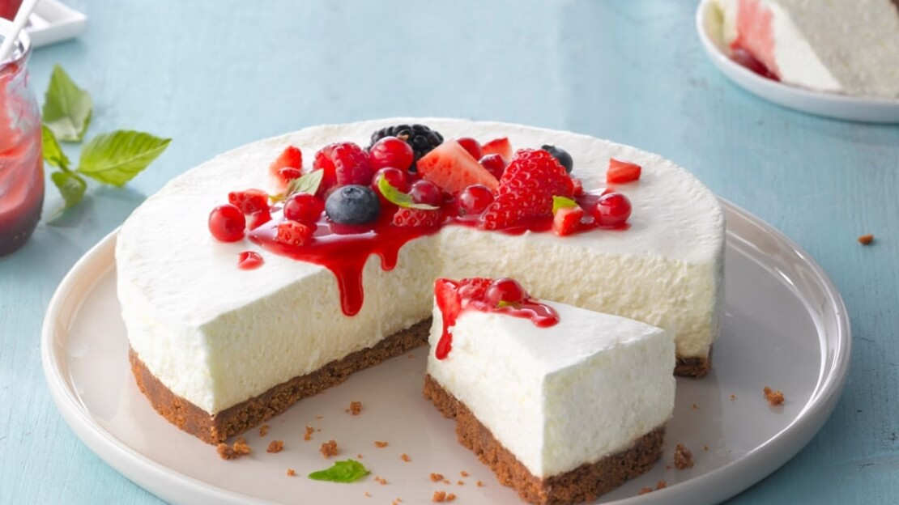
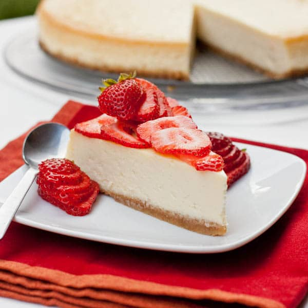

Here is a recipe I created after having this dish in a restaurant. Enjoy!
Ingredients
- 400g graham crackers
- 150g unsalted butters, melted
- 300g marshmallows
- 175g unsalted butter, melted
- 500g Philadelphia cream cheese, softened
- 250ml thickened/whipping cream, warm
- 3 tbsp powdered gelatin + 3 tbsp water
Instructions
To prepare crust add graham crackers to a food processor and process until you reach fine crumbs. Add melted butter and pulse 3-4 times to coat crumbs with butter.
Pour mixture into a 20cm (8”) tart tin. Use the back of a spoon to firmly press the mixture out across the bottom and sides of the tart tin. Chill for 30 min.
Begin by adding the marshmallows and melted butter into a microwave safe bowl. Microwave for 30 seconds and mix to combine. Set aside.
Next, add the gelatine and water to a small mixing bowl and mix to combine. Microwave for 30 seconds.
Add the cream cheese to the marshmallow mixture and use a hand mixer or stand mixer fitted with a paddle attachment to mix until smooth.
Add the warm cream and melted gelatin mixture and mix until well combined.
Pour cheesecake mixture into the chill tart crust. Put in the fridge for chilling for 2 hours.Add some fresh strawberrys on the top.
